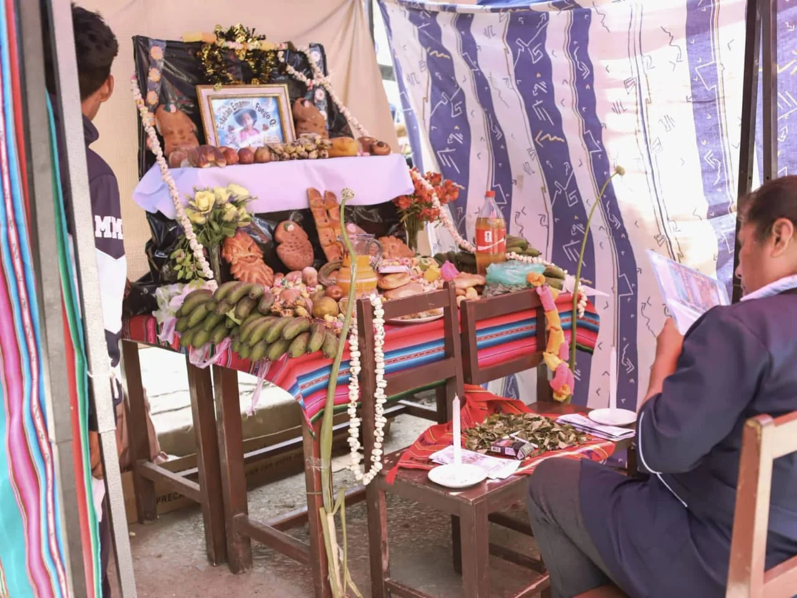

Cultura
Celebración de Todos Santos
Fecha pendiente de confirmación

Fotografía de una mesa de ofrendas correspondiente a la actividad de Todos Santos.
La imagen compartida muestra una mesa preparada para Todos Santos, con panes, frutas, flores y otros elementos de la ofrenda tradicional.
La fecha exacta y la descripción de la organización de esta actividad están pendientes de confirmación.
Prototipo académico. Confirmar fecha, texto y autorizaciones de imágenes antes de la publicación oficial.